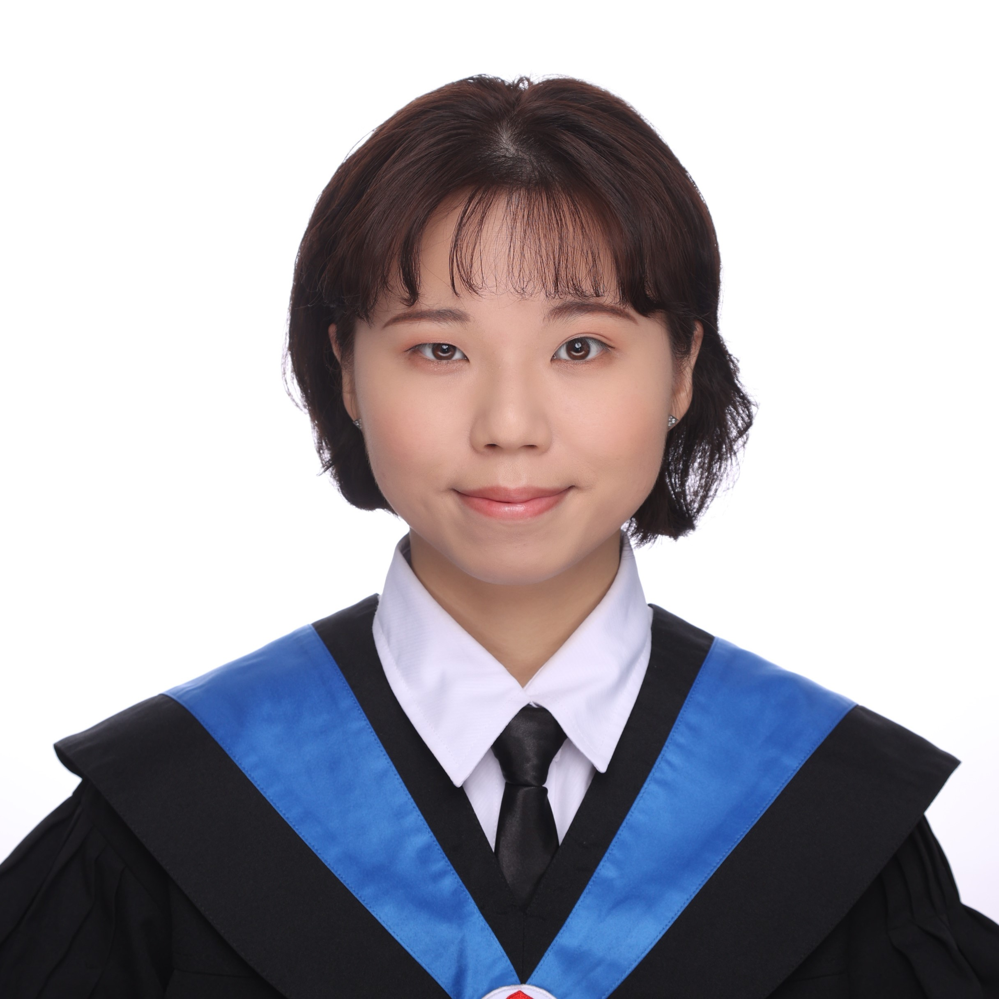

Master's in Electrical Engineering @ RWTH Aachen | Digital Design & AI Accelerators Enthusiast
I’m a digital design engineer in training, with hands-on experience in RTL-to-GDSII flow, AI accelerator integration, and FPGA-based systems. I'm passionate about hardware-software co-design and building systems that accelerate AI workloads efficiently.
Feel free to reach out via email or connect through LinkedIn.